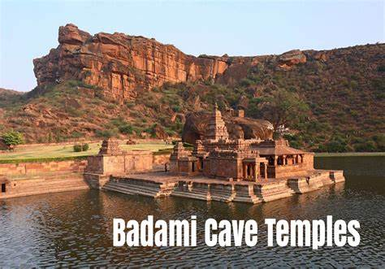

-
Udupi
Udupi (alternate spelling Udipi; also known as Odipu) is a city in the Indian state of Karnataka. Udupi is situated about 55 km (34 mi) north.It is notable for the Krishna Temple...
-
Bandipur
Bandipur National Park is a national park covering 868.63 km 2 (335.38 sq mi) in Chamarajnagar district in the Indian state of Karnataka. It was established as a tiger reserve under Project Tiger
-
Hampi
Hampi or Hampe (Kannada:), also referred to as the Group of Monuments at Hampi, is a UNESCO World Heritage Site located in Hampi (City), Ballari district now Vijayanagara district..
-

Badami
Temple caves. Cave 1. Entrance to Cave 1. Nataraja or Dancing Shiva in Cave 1. Cave 1 is about 59 feet (18 m) above ground level on the north-west part of the hill...
-
Sakleshpur
Sakleshpur, Sakleshpura or Sakleshapura is a hill station town and headquarters of Sakleshpur taluk in Hassan district in the Indian state of Karnataka...
-
Bijapur
Bijapur, officially known as Vijayapura, is the district headquarters of Bijapur district of the Karnataka state of India. It is also the headquarters for Bijapur Taluk. Bijapur city is well known for..
-
Yana
Yana is a tourist destination located in forest of Katgal Range, which is also a part of Malenadu region of Uttara Kannada district of Karnataka state in India. Yana is one of the wettest villages in...
-
Belur
Belur (IPA:) is a town and taluk in Hassan district in the state of Karnataka, India. The town is renowned for its Chennakeshava Temple dedicated to Vishnu , one of the finest examples of...
-
Udupi
Udupi (alternate spelling Udipi; also known as Odipu) is a city in the Indian state of Karnataka. Udupi is situated about 55 km (34 mi) north....
-
Udupi
Udupi (alternate spelling Udipi; also known as Odipu) is a city in the Indian state of Karnataka. Udupi is situated about 55 km (34 mi) north....